People
Principal Investigator
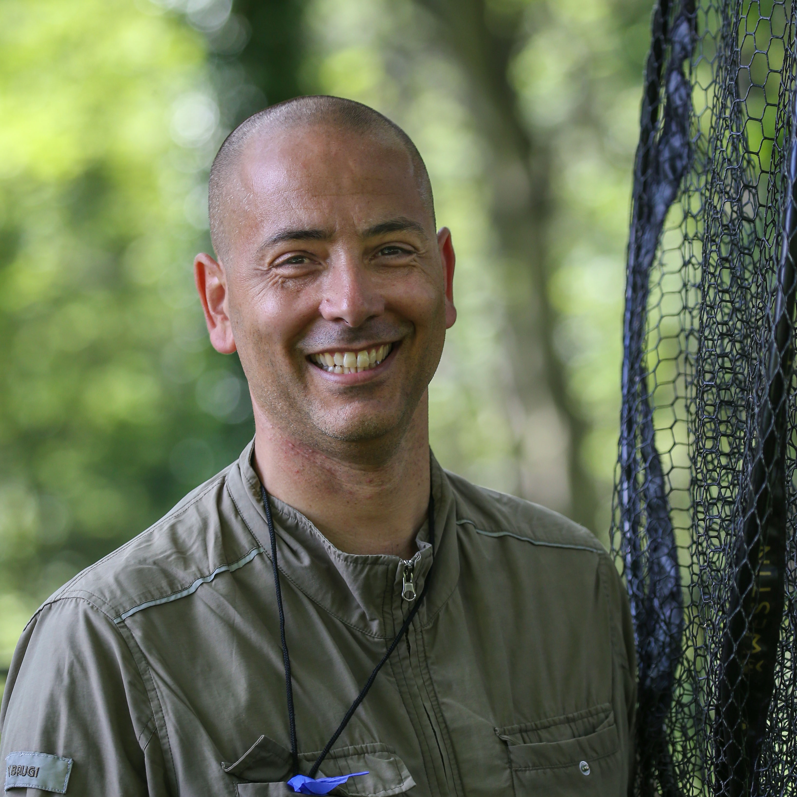
Simone Ciuti
I am a quantitative behavioural ecologist studying mainly large mammals in human-dominated landscapes. My research focuses on understanding and mitigating human-wildlife interactions, exploring how human disturbance shapes wildlife behaviour and ecology, and providing empirical evidence to inform conservation and management decisions. I lead a vibrant, dynamic research team in Dublin, Ireland, with projects spanning the globe.
since2025 Associate Professor of Wildlife Biology, UCD, Ireland.
2017-2024 Assistant Professor of Wildlife Biology, UCD, Ireland.
2013-2017 Lecturer, University of Freiburg, Germany.
2012-2013 Research Associate, University of Alberta, Canada.
2010-2012 Postdoc, University of Alberta, Canada.
2006-2010 Postdoc, University of Sassari, Italy.
2002-2006 PhD in Behavioural Ecology (with honours), University of Sassari, Italy.
2001-2002 Research Assistant, University of Pisa, Italy.
1994-2001 Biological Sciences degree (with distinction; equivalent to BSc+MSc), University of Pisa, Italy.
Google Scholar Webpage @ UCD Research Gate ORCID X/twitter Instagram
Postdocs
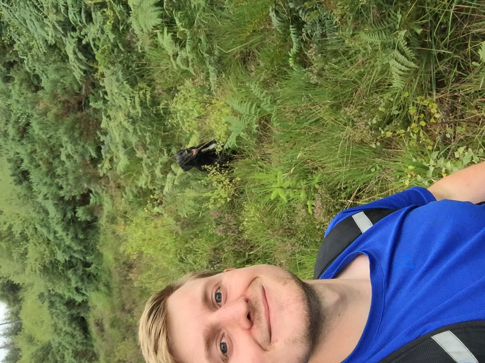
Kilian Murphy
Kilian’s research has been focusing on providing data-driven solutions to large herbivore management conflicts. Kilian uses data, simulations, and tech to disentangle the cause of long-term management conflicts and provide evidence-based management options for stakeholders and policymakers.
Kilian is currently developing a badger Agent Based Model to tackle current and future challenges with bovine-tuberculosis control in Ireland. Kilian’s Agent-based models (ABMs) will answer a specific epidemiological question regarding the impact of bovine tuberculosis bTB management on Irish badger populations, i.e., how do badger metapopulation dynamics and infection levels change under varying wildlife management (i.e., no management, culling, vaccination)? funding: DAFM
Personal website
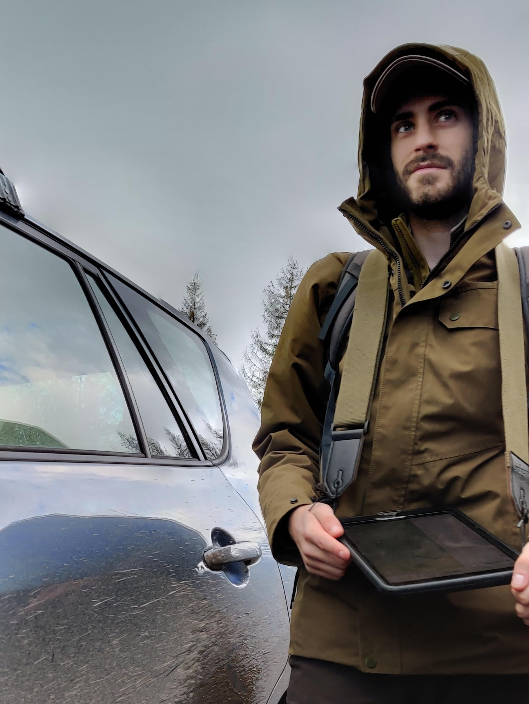
Adam Smith
Adam has returned to Dublin after completing his PhD working on several camera-trap projects across Central and Eastern Europe. For his postdoc, he is leading the Irish branch of Snapshot Europe and is working closely with hunters to assess the scavenger community feeding on deer carcass remains left behind after hunts, with a particular focus on their potential role in the maintenance and spread of bovine tuberculosis. funding: Research Ireland
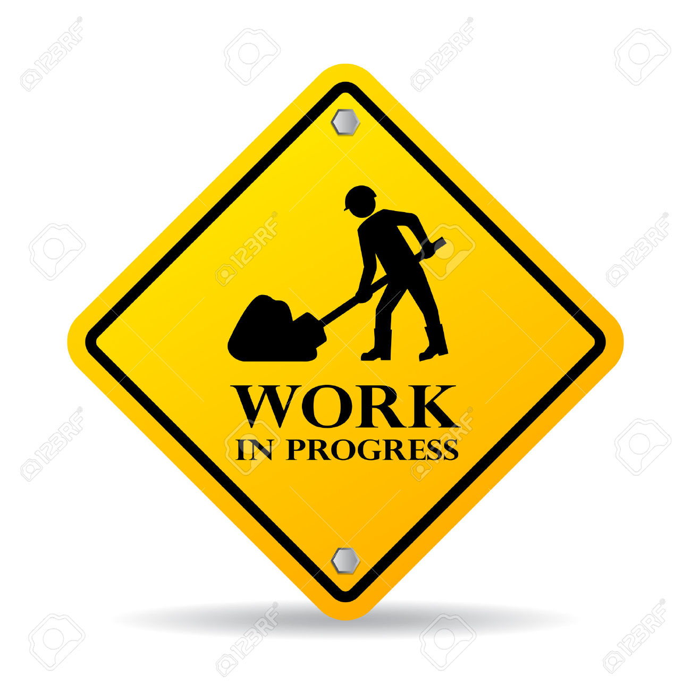
WANTED!
We are looking for a postdoc (2 years contract) - particularly suited for a recently graduated PhD - to assist our crew working in the DeerImpact project. The postdoc will analyse some of the deer data we have been collecting, particularly looking at national level deer densities and distribution. The postdoc will be also involved in some of the DeerImpact field operations. funding: DAFM
PhD students (UCD)
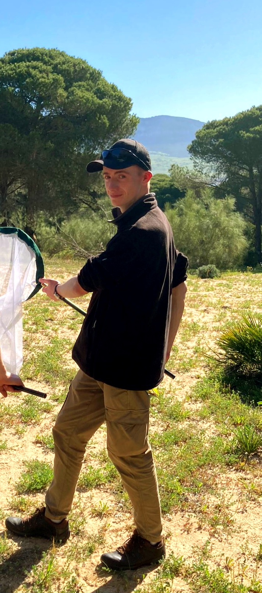
Liam Kirwan
Liam’s interests lie in using empirical knowledge to improve biodiversity conservation and management, particularly relating to mammals. His research focuses on the variety of feeding ecologies among Irish deer species, with the aim of informing effective, tailored management of deer within forestry and agroforestry settings. Liam is currently developing novel methods to estimate wildlife density using camera traps (using both simulations and empirical data). funding: DAFM
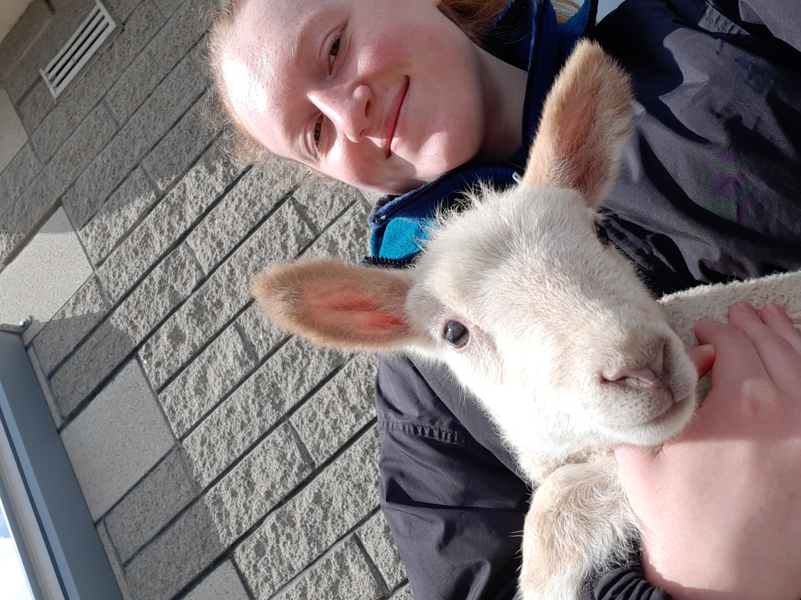
Sarah Redmond
Sarah has been working in the lab for several years, after completing her Research MSc on the impact of human feeding on deer ecology and working as a research assistant on the DeerImpact project. She has now started a PhD focusing on the fallow deer population of Phoenix Park, investigating human–deer feeding interactions and disentangling their profound effects on deer behaviour. funding: OPW
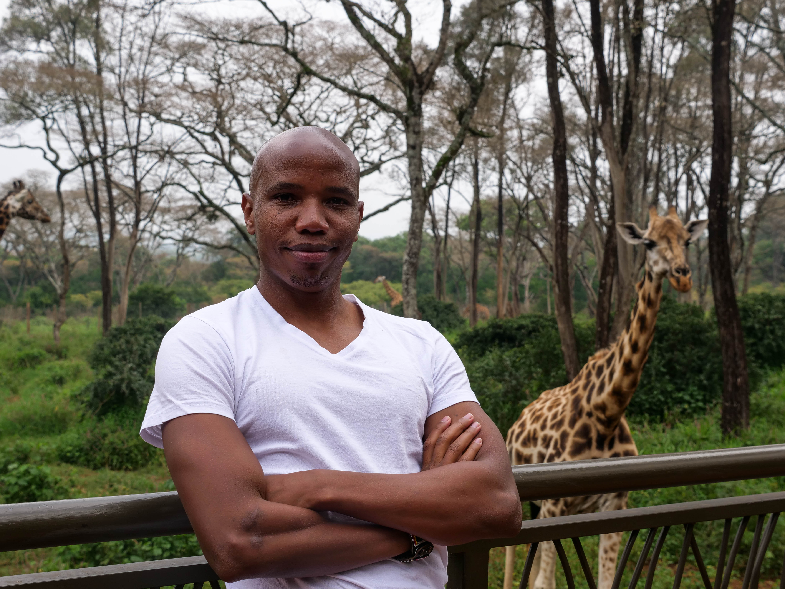
Adams Kipchumba
Adams takes a keen interest in animal movement ecology, conservation conflicts and socio-ecological systems. He is based in Kenya working for the Giraffe Conservation Foundation in securing a future for all giraffe populations in the wild. His research is focusing on the conservation ecology of the threatened Masai giraffe in southern Kenya. funding: GCF & UCD
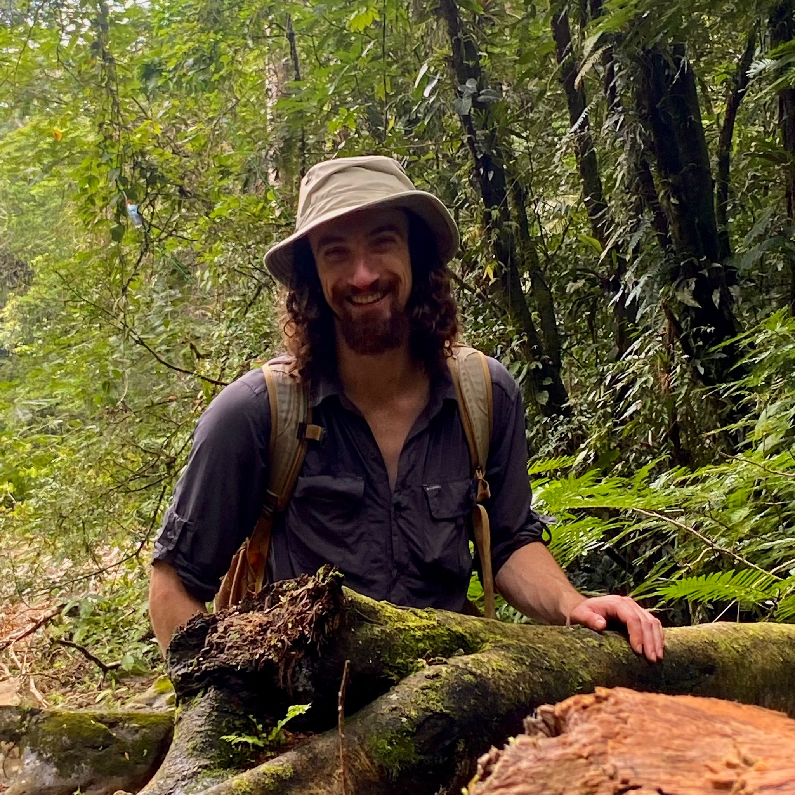
Fiachra Corcoran
Fiachra’s research to date has ranged from behavioral studies on fallow deer to freshwater invasive species. He is now working on the DAFM-funded project deerImpact examining the effects of deer on Irish forestry and woodland ecosystems in Ireland. Fiachra is currently developing novel approaches to monitor deer browsing impact to inform deer management and policy. funding: DAFM
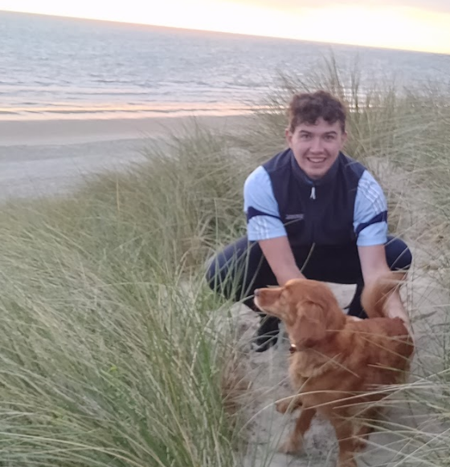
Colin Brock
Colin’s research so far has focused on the impact of overabundant deer on Irish forest ecosystems. His research masters focused particularly on deer damage in forests across Ireland under the umbrella of the DAFM-funded SMARTDEER project. He recently worked as a research assistant in the DAFM-funded bioDEERversity project examining the effects of deer on biodiversity in a sika deer hotspot area in Co Wicklow. He is currently expanding this research, funded by the Irish Research Council, applying a similar approach over a national scale in areas where multiple deer species occur, to understand how co-occurring species in competition for resources interact in affecting our biodiversity. funding: Research Ireland
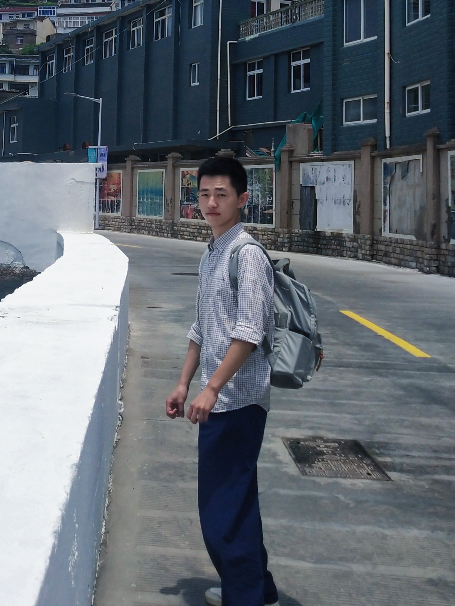
Cong Yu
Cong is leading a main project linking deer neonatal personality to life-history traits such as risk-taking behaviour, dispersal, mating strategies, and survival. Cong specialises in advanced statistical modelling, both frequentist and Bayesian. He is also involved in several international collaborations examining bird distribution and range shifts associated with species’ innovativeness and climate change. funding: Chinese csc
PhD students (cosupervised)
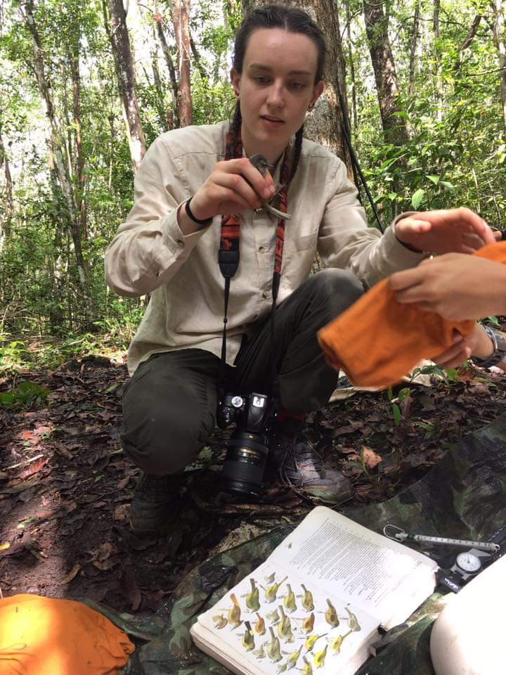
Anna David
Anna is working on the DeerImpact project and is based in Galway at Atlantic Technological University (ATU). Her research focuses on estimating deer densities using faecal spatial capture–recapture models. Anna is also looking at the status of red/sika deer hybridization in Ireland. Her main supervisor is Allan McDevitt, and she is co-supervised by Simone Ciuti. funding: DAFM
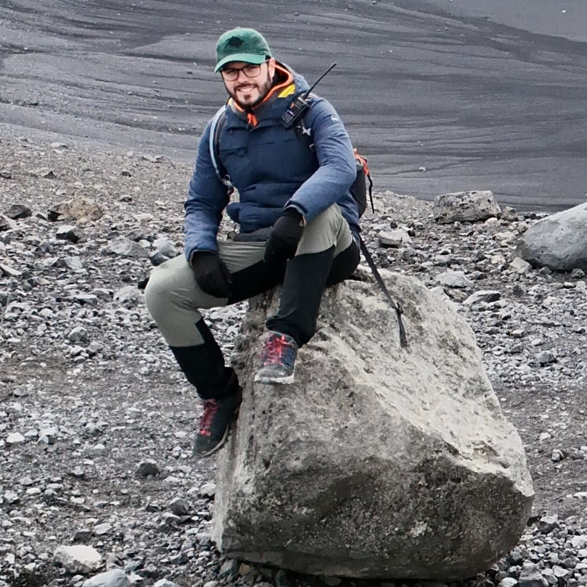
Giacomo Bovo Luisetto
Giacomo is a student of University of Padova (Italy) interested in the eco-evolutionary dynamics that shapes behaviour, with a focus on inter individual behavioural differences in large mammals. His current research focuses on correlations among individual personality traits, known as behavioural syndromes, and their implications for the evolution of spatial behaviour, using long-term telemetry data from red deer and wapiti. He has a strong interest in human-wildlife conflicts, particularly in how animal personality is involved in the emergence of confident individuals. Most of his work is based on statistical modeling and machine learning approaches to track individuals and their movement behaviours. Supervisors: Gil G. Rosenthal, Francesca Cagnacci, Simone Ciuti; Advisors: Daniel T. Blumstein, Alastair J. Wilson. funding: Italian Ministry of Education
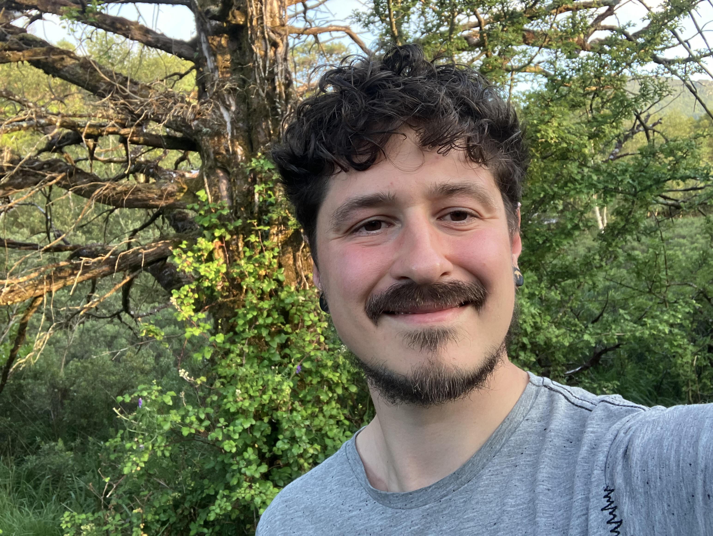
Benedikt Wiese
Benedikt is working on the DeerImpact project and is based in Galway at Atlantic Technological University (ATU). His research focuses on estimating deer diet using faecal meta-barcoding. Benedikt is looking at the variation of deer diet as a function of deer density as well as livestock pressure. His main supervisor is Allan McDevitt, and he is co-supervised by Simone Ciuti. funding: DAFM
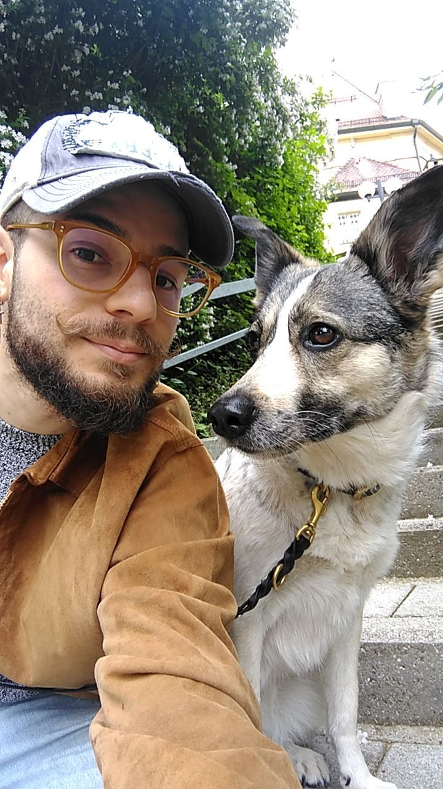
Matteo Bastianelli
Matteo is particularly interested in studying mammalian carnivore ecology and behaviour and how they respond to increasing anthropogenic pressures. Matteo’s research is focused on the impact of the road network on European wildcat and Eurasian lynx movement behaviour and survival across Europe. He is based in the Bavarian Forest National Park and he is a student at the University of Freiburg. Matteo is the data curator of Eurowildcat. Supervisors: Dr. Marco Heurich, Dr. Carsten Dormann (co-supervisor), Dr. Simone Ciuti (co-supervisor) funding: German gvt
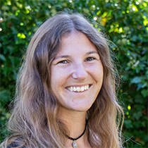
Hannah Pepe
Hannah’s research is focused on the effects of wolf recolonisation on red deer behaviour in the context of Europe’s anthropogenic landscapes. She is addressing this research question through movement ecology and using long term telemetry data from red deer in central Europe. Hannah is based in the Bavarian Forest National Park under the European funded Interreg project “Ecological impact of the return of wolves on the Šumava/Bavarian Forest ecosystem”, and is a student at the University of Freiburg. Outside of her PhD, she volunteers for Rewilding Europe’s youth network European Young Rewilders and is interested in human-wildlife(carnivore) coexistence. Supervisors: Dr. Marco Heurich and Dr. Simone Ciuti; mentor: Dr. Anne Hertel. funding: EU interreg
Research Assistants
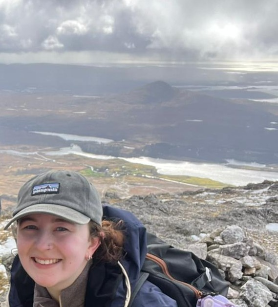
Sarah Darcy
Sarah is working on the DeerImpact project as a research assistant. She is involved in several field activities (camera trapping, tree planting, and browsing experiments), as well as desk-based work (camera trap distance sampling and behavioural interpretation of camera trap data). funding: DAFM
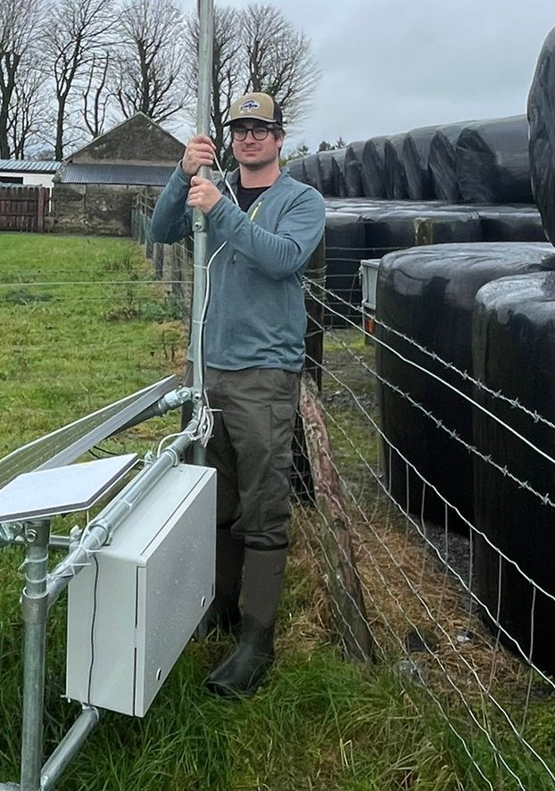
Levi Custer
Levi is the heart and driving force of the Moving Badger Project. With a degree in wildlife biology and IT, he is responsible for developing the new satellite tracking technology we use to monitor badgers, as well as leading field operations. funding: DAFM
Research MSc students
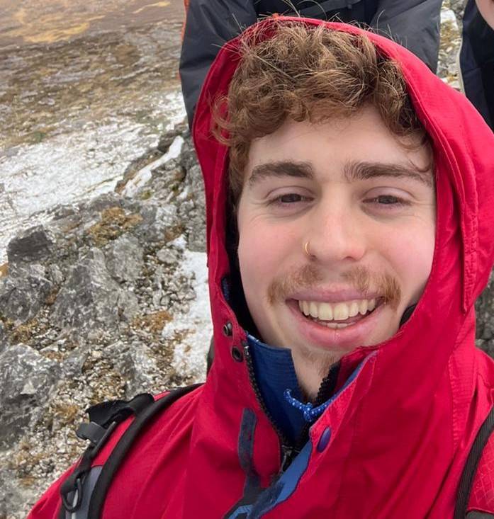
Aaron Gaffney
Aaron is leading a critical research programme aimed at addressing key knowledge gaps in badger ecology in Ireland, particularly regarding their role in the maintenance and spread of bovine tuberculosis. In particular, Aaron is working closely with the Wildlife Unit of the Department of Agriculture, Food and the Marine (DAFM) to estimate badger trappability within the vaccination programme. This work represents an important step towards understanding the penetration and effectiveness of vaccination and supports the longer-term transition of the programme from culling to full vaccination. Aaron is also estimating badger density across Irish landscapes using camera trapping, providing another key population parameter needed to better understand and manage disease dynamics. funding: Research Ireland
Lab visitors, internships & affiliated members
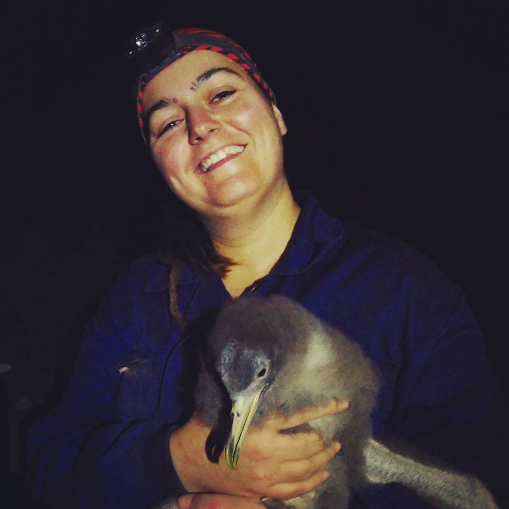
Virginia Morera-Pujol
Virginia is a former postdoctoral researcher in our group who initially worked on the SMARTDEER project before focusing on predicting relative badger densities across Ireland. An expert Bayesian modeler with a passion for spatial data analysis, she is now an Ad Astra Assistant Professor at the UCD School of Agriculture. Although she currently directs her own research group, Virginia remains a key collaborator in our ongoing work. She serves as co-lead on the Moving Badgers project and co-supervises PhD students for both the deerImpact and BioDEERversity2 initiatives.
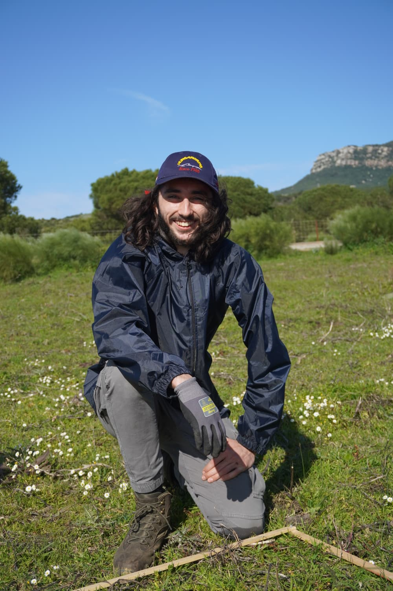
Conor Doyle
Conor is leading an innovative project using giraffe data collected by the Giraffe Conservation Foundation in the Namib Desert, north-west Namibia. He is currently combining social network characteristics with movement metrics to understand how movement strategies and social behaviour are linked in giraffes.
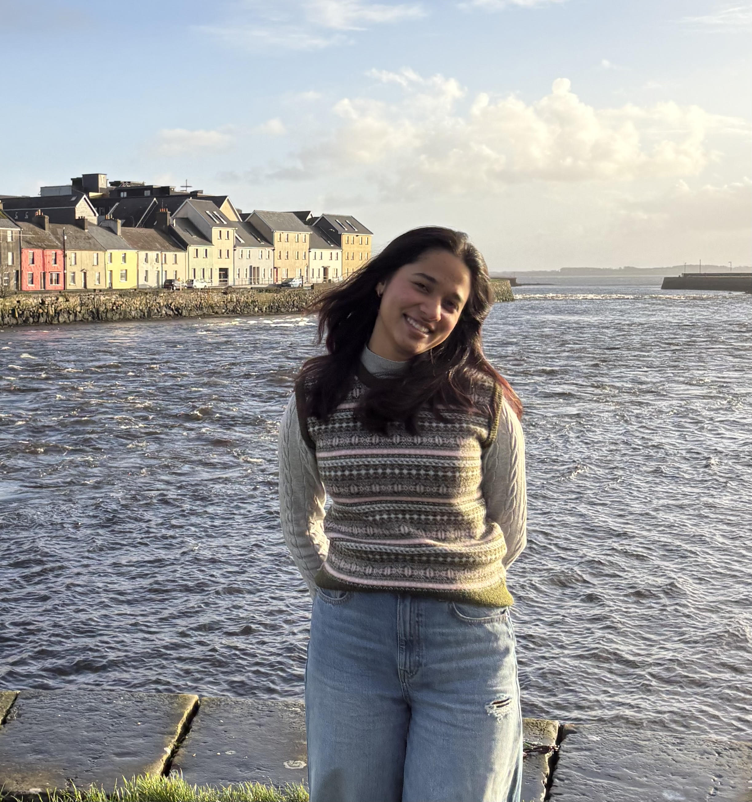
Angela Roger Sequeira
Angela is working on the DeerImpact project, assisting with camera trap analyses including species identification, behavioural interpretation, and density estimation. She is currently a member of the lab as part of her internship and will also take part in fallow deer fieldwork over the summer.
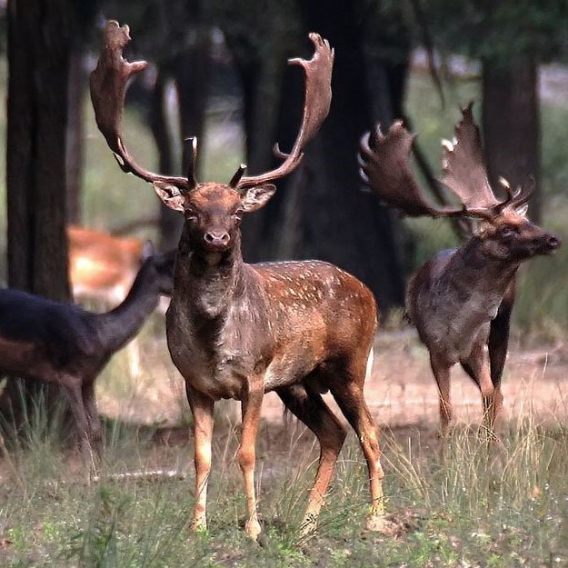
Laura O’Neill & Liam Connell
Laura and Liam are permanent staff members in our School (technical officers) and contribute significantly to data collection and logistics for several lab projects. They have taken over the long-term monitoring of deer in Phoenix Park, which was previously carried out by Anna David and, before her, Amy Haigh. Since 2018, we have been monitoring deer survival and social networks in the park as part of a long-term longitudinal study.
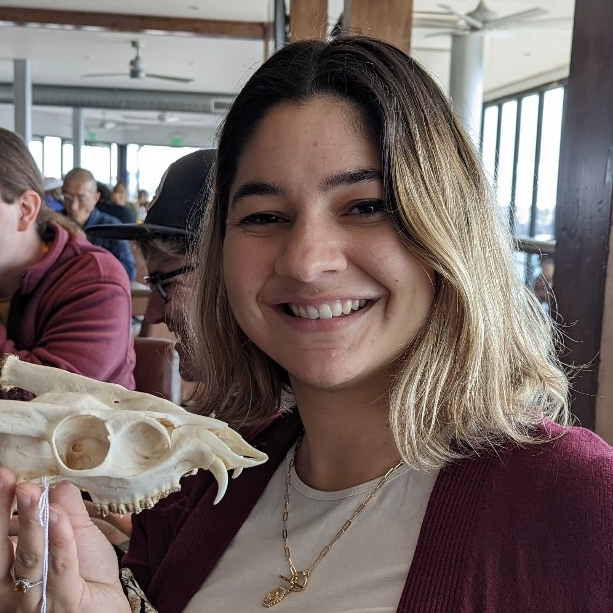
Nicole Lopez
Nicole’s research integrates biomechanical modelling, behavioural field studies, and phylogenetic comparative analyses to explore the wide variation in mammalian traits. She aims to disentangle the form–function relationship in cervid weaponry, examining whether these structures function primarily as visual signals or as tools for combat. Nicole is currently completing her PhD at the University of Montana in the Emlen Lab, and she is collaborating with us on several projects aimed at supporting her thesis with additional data.
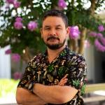
Dario Moreira-Arce
Dario currently works as a full-time academic (assistant-professor level) at the University of Santiago de Chile. He serves as principal investigator and collaborator on projects funded through both internal and external sources. He is also the author and co-author of several peer-reviewed publications and has presented scientific work on topics related to biodiversity conservation in forest and livestock ecosystems. Dario is collaborating with us on a number of projects mainly focused on Chilean carnivores and herbivores.
Taught MSc and undergraduate students
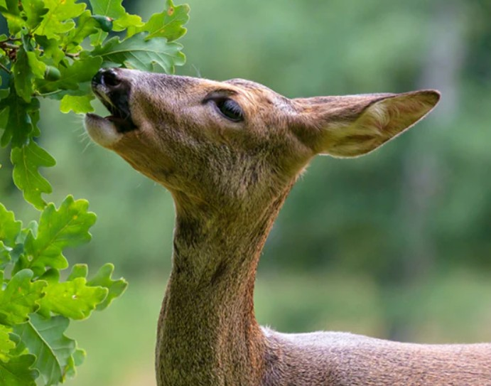
Noah Pin, Uma Isselee & Aoibhin McEvoy
Noah, Uma, and Aoibhin are currently working on their taught MSc final theses, examining the impacts of deer on biodiversity as well as the implications of human feeding of deer for the selection of behavioural traits and the domestication of wildlife.
Former members
postdocs
Virginia Morera-Pujol (2021 - 2025)
PhD (VIVA examination year)
Jane Faull (2025), Kim Conteddu (2024), Adam Smith (2024), Prabhleen Kaur (2024), Holly English (2024), Kilian Murphy (2024), Laura Griffin (2022), Bawan Amin (2022), Emma Hart (2020).
Research Assistants
Sarah Redmond, Colin Brock, Hannah Condon.
ResMsc (year of completion)
Sarah Redmond (2024), Renee Khouri (2024), Andrew Ryan (2023), Cliodhna Hynes (2023), Colin Brock (2023), Ellen O’Hagan (2022), Sarah Keenan (2022), Srivats Chari (2021), Matthew Quinn (2021), Kimberly Conteddu (2020), Adam Smith (2019), Tobias Kirchenbaur (2019), Fabio Weiss (2019), Julia Greulich (2019), Jakob ViBe (2018), John Benjamin Mcauley (2017), Pol Thelen (2017), Kaja Weinandi (2017), Zeno Bader (2017), Soeren Greule (2016), Jim-Lino Kaemmerle (2016), Henriette Tripke (2016), Laura Kehry (2016), Julia Fuesternau Oliveira (2016), Hannah Weber (2016), Hannah Heither (2014), Robin Benz (2014).
Lab visitors/contributors, internships, Erasmus+
Francesco Sganzerla, Jules Vernes, Amy Haigh (technical officer), Anna David (technical officer), Paddy Murphy, Pietro Sabbatini, Faith Desiree Kurtz, Karen Ahearne, Anthony Legeard, Vasou Ioannidis, Jenna Pestotnik, Kyla Nitahara, Matthew Quinn, Andrea Locatelli, Renee Khouri, Peter Antkowiak.
Taught MSc
Stephen Bond, Sarah O’Sullivan, Owen Small, Yujin Zhou, Conor Sweeney, James Dempsey, Nathan Finn, Filipe Oliveira, Sinead Dillon, Maria Browne, Yu Zhuzhu, Saoirse Patchell, Katie Wilson, Emily Mooney.
Undergrads
Amelia Walsh, Molly Walsh, Alina Slivkina, Niamh McGrath, Laura Karolewska, Anna Bismilla, Sarah Darcy, Liam Kirwan, Beth Dimon, Elod Marton, Caitlin Phipps, Elizabeth Earley, Mariosa Bryceland, Sarah Redmond, Shawn Dowdall, Jane Faull, Hugo Brooks, Mattie Purinton, Pippa-Jordan Faull, Alison Norman, Hannah Condon, Alice Magee, Hayley-Anne Haughey, Andrew Ryan, Julia Greulich, Milena Zurmuel.
Crawford Hayes bursaries
Liam Kirwan, Sarah Darcy, Niamh Collins, Fiachra Corcoran, Katie Connolly, Sarah Redmond, Colin Brock, Jane Faull, Kate O’Leary, Hannah Condon, Alison Norman, Pippa-Jordan Faull, Orna Phelan, Hayley-Anne Haughey.